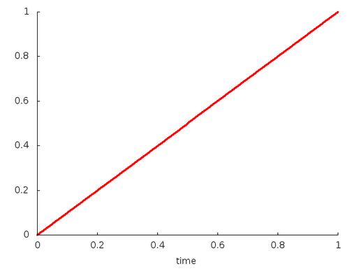
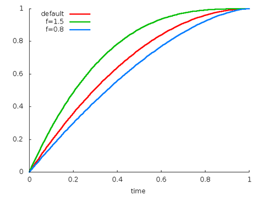
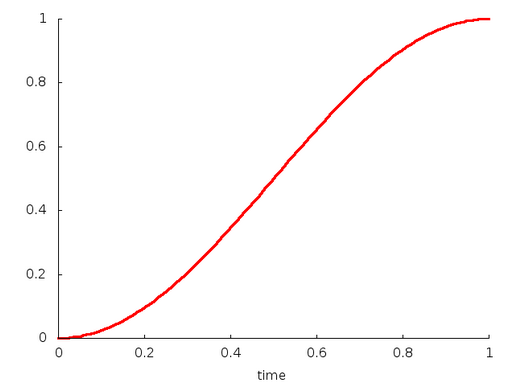
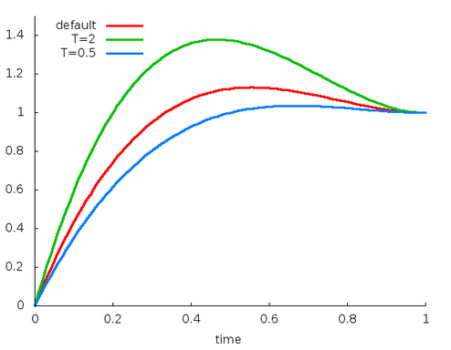
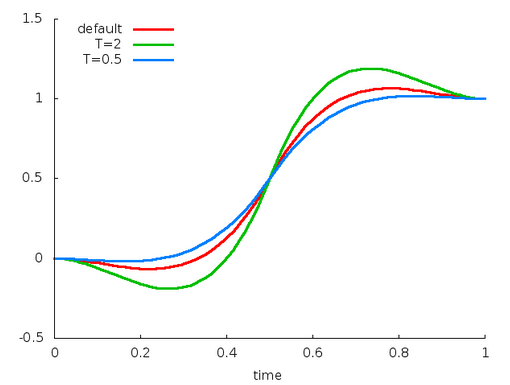
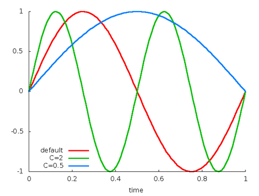

【四】插值器
差值器概述
- 线性插值的动画
图1是在屏幕上进行水平位移的动画，总时间是40ms，移动总距离为40pixels(像素)，每10ms刷新一帧，同时移动10pixels。在第40ms动画结束，停止在水平位置40pixels的位置。整个动画过程采用的是线程插值器（ linear interpolation），意味着以匀速移动。

- 非线性插值的动画
当然，也可以指定差值器是非线性的，图2采用的是先加速，再减速的差值器。同样是在40ms内移动40pixels。在开始的时候，动画一直加速到一半的距离（20pixels）,然后在减速剩下的一半距离直到动画结束。从图2可以看出，动画的两头的位移量低于中间部门的位移量。

插值器
时间插值器，定义了一个时间的函数：y = f(t),其中t=elapsed time / duration.
每个插值器的源码流程都相同，下面以AccelerateInterpolator为例，说明插值器的内部原理：
//系统自带的所有插值器都继承了BaseInterpolator
public class AccelerateInterpolator extends BaseInterpolator implements NativeInterpolatorFactory {
private final float mFactor;
private final double mDoubleFactor;
//无参数的构造方法, factor默认为1
public AccelerateInterpolator() {
mFactor = 1.0f;
mDoubleFactor = 2.0;
}
//有参数的构造方法
public AccelerateInterpolator(float factor) {
mFactor = factor;
mDoubleFactor = 2 * mFactor;
}
//构造方法，通过资源文件获取参数
public AccelerateInterpolator(Context context, AttributeSet attrs) {
this(context.getResources(), context.getTheme(), attrs);
}
/** @hide 隐藏方法，真正用来解析资源文件的方法*/
public AccelerateInterpolator(Resources res, Theme theme, AttributeSet attrs) {
TypedArray a;
if (theme != null) {
a = theme.obtainStyledAttributes(attrs, R.styleable.AccelerateInterpolator, 0, 0);
} else {
a = res.obtainAttributes(attrs, R.styleable.AccelerateInterpolator);
}
//资源文件未定义factor时，默认为1.0f
mFactor = a.getFloat(R.styleable.AccelerateInterpolator_factor, 1.0f);
mDoubleFactor = 2 * mFactor;
setChangingConfiguration(a.getChangingConfigurations());
// 回收TypedArray，释放相应的内存资源
a.recycle();
}
//插值计算的核心方法，定义了插值的映射关系
public float getInterpolation(float input) {
if (mFactor == 1.0f) {
return input * input;
} else {
return (float)Math.pow(input, mDoubleFactor);
}
}
/** @hide */
@Override
public long createNativeInterpolator() {
return NativeInterpolatorFactoryHelper.createAccelerateInterpolator(mFactor);
}
}
其中 BaseInterpolaor实现了Interpolator接口，而Interpolator接口并没有定义任何方法和属性，只是单纯地继承了TimeInterpolator
abstract public class BaseInterpolator implements Interpolator {
private int mChangingConfiguration;
/** * @hide */
public int getChangingConfiguration() {
return mChangingConfiguration;
}
/** * @hide */
void setChangingConfiguration(int changingConfiguration) {
mChangingConfiguration = changingConfiguration;
}
}
TimeInterpolator接口自定义了一个方法getInterpolation,这就是所有插值器最为核心的方法。
public interface TimeInterpolator {
/* * @param input 代表动画的已执行的时间，∈[0,1] * @return 插值转换后的值 */
float getInterpolation(float input);
}
通过分析每一个插值器的插值方法的源码，下面总结了所有插值器的插值函数：
1. Linear
- 资源ID: @android:anim/linear_interpolator
- 构造方法：
public LinearInterpolator(); //没有任何可调参数
- 插值函数：
- 公式：
y=t
- 公式：
- 插值曲线：

2. Accelerate
- 资源ID: @android:anim/accelerate_interpolator
- 构造方法：
public AccelerateInterpolator()；//默认factor=1public AccelerateInterpolator(float factor)；public AccelerateInterpolator(Context context, AttributeSet attrs); //通过资源文件获取factor值，默认为1。
- 插值函数：factor为加速因子，记为f, 默认值为1
- 公式：
y=t^(2f) - 缺省：
y=t^2
- 公式：
- 插值曲线：

3. Decelerate
- 资源ID: @android:anim/decelerate_interpolator
- 构造方法：
public AccelerateInterpolator()；//默认factor=1public AccelerateInterpolator(float factor)；public AccelerateInterpolator(Context context, AttributeSet attrs); //通过资源文件获取factor值，默认为1。
- 插值函数：factor为减速因子，记为f, 默认值为1
- 公式：
y= 1-(1-t）^(2f), - 缺省：
y= 2t-t^2
- 公式：
- 插值曲线：

4. AccelerateDecelerate
- 资源ID: @android:anim/accelerate_decelerate_interpolator
- 构造方法：
public AccelerateDecelerateInterpolator()； //没有任何可调参数 资源文件获取factor值。
- 插值函数：
- 公式：
y = 0.5cos((t+1)π)+0.5
- 公式：
- 插值曲线：

5. Anticipate
- 资源ID: @android:anim/anticipate_interpolator
- 构造方法：
public AnticipateInterpolator()；//默认tension=2public AnticipateInterpolator(float tension)；public AnticipateInterpolator(Context context, AttributeSet attrs); //通过资源文件获取tension值。
- 插值函数：tension`为张力因子，记为s, 默认值为2
- 公式：
y = t*t*((s+1)t-s), - 缺省：
y = t*t*(3t-2)
- 公式：
- 插值曲线：

6. Overshoot
- 资源ID: @android:anim/overshoot_interpolator
- 构造方法：
public OvershootInterpolator()；//默认tension=2public OvershootInterpolator(float tension)；public OvershootInterpolator(Context context, AttributeSet attrs); //通过资源文件获取tension值。
- 插值函数：tension`为张力因子，记为s, 默认值为2
- 公式：
y = (t-1)(t-1)((s+1)(t-1)+s) + 1, - 缺省：
y = (t-1)(t-1)(3t-1) + 1
- 公式：
- 插值曲线：

7. AnticipateOvershoot
- 资源ID: @android:anim/anticipate_overshoot_interpolator
- 构造方法：
public AnticipateOvershootInterpolator()；//默认tension=3public AnticipateOvershootInterpolator(float tension)； //tension = 1.5*tensionpublic AnticipateOvershootInterpolator(float tension, float extraTension); //tension = tension * extraTensionpublic AnticipateOvershootInterpolator(Context context, AttributeSet attrs); //通过资源文件获取tension值。
- 插值函数：tension`为张力因子，记为s
- 公式：
y = 2t*t*(2t*s+2t-s), 当t < 0.5时,y = 2(t-1)(t-1)(2(s+1)(t-1)+s) + 1 , 当t >= 0.5时,
- 缺省：
y = 2t*t*(8t-3), 当t < 0.5时,y = 2(t-1)(t-1)(8t-5) + 1 , 当t >= 0.5时,
- 公式：
- 插值曲线：

8. Bounce
- 资源ID: @android:anim/bounce_interpolator
- 构造方法：
public BounceInterpolator()；//没有任何可调参数
- 插值函数：
- 公式：
- y = 8*(1.1226t)^2 ，当 t < 0.3535
- y = 8*(1.1226t - 0.54719)^2 + 0.7 ，当 t < 0.7408
- y = 8*(1.1226t - 0.8526)^2 + 0.9 ，当 t < 0.9644
- y = 8*(1.1226t - 1.0435)^2 + 0.95 ，当 t <= 1.0
- 公式：
- 插值曲线：

9. Cycle
- 资源ID: @android:anim/cycle_interpolator
- 构造方法：
public CycleInterpolator(float cycles)；public CycleInterpolator(Context context, AttributeSet attrs); //通过资源文件获取cycles值，默认为1。
- 插值函数：cycles`为循环次数，记为c
- 公式：
y = sin（2*c*t*π）, - 缺省：
y = sin（2*t*π）
- 公式：
- 插值曲线：
